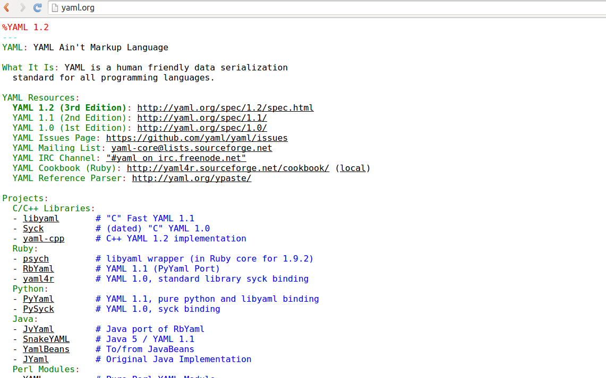
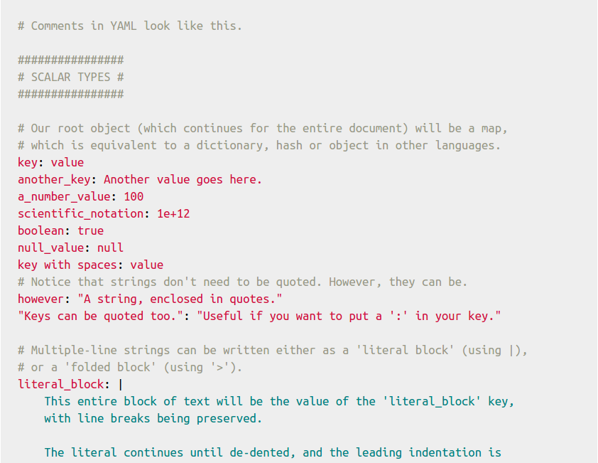
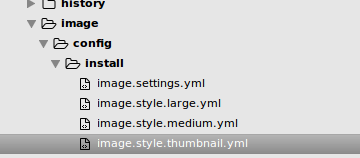
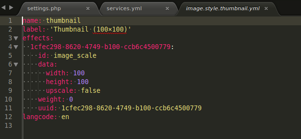
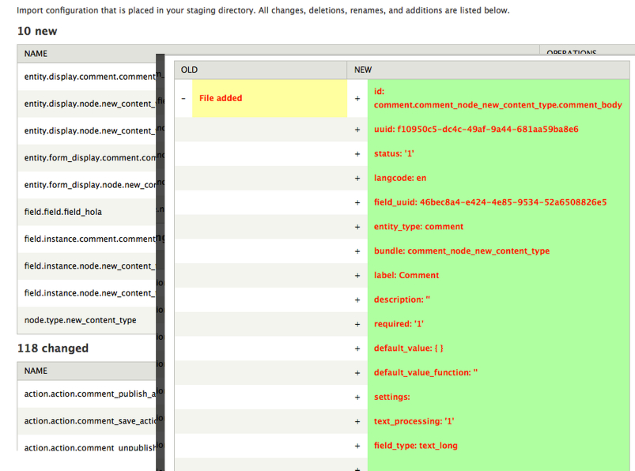
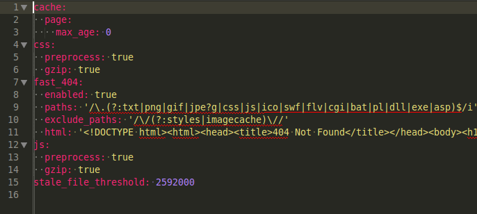

Group Module
Building community sites in Drupal 8
Presented by Denis
Denis Roy
- Founder / CEO at Azri Deutschland GmbH
- Government 2.0, Web Strategy and Drupal Consultant
Overview
- An overview of group module in general sense.
- Group Types
- How to add group roles
- Install group content types
- Managing permissions in a group type
- Configuring role sync to synchronize site roles with group role
- Creation of content in group
- Comparison of group with OG
- Extending groups with subgroup
Configrations Challenges in Drupal 7
- No clear cut differentiation between content and configuration.
- Not every settings can be exported.
- Configuration files are not human readable.
- Features module was good but not sufficient.
- Configuration Management not part of the core.
Overview of Configuration
Content
Information meant to be displayed on your site: article, basic page, images, files, etc.Session
Information about individual users' interactions with the site, such as whether they are logged in. This is really "state" information, but it is not stored the same way so it's a separate type here.State
Information of a temporary nature about the current state of your site. Examples: the time when Cron was last run, whether node access permissions need rebuilding, etc.Configuration
Information about your site that is not content and is meant to be more permanent, such as the name of your site, the content types and views you have defined, etc.Deciding how to classify your information
Configuration vs. State
If your information would need to be deployed from your development server to your live server, it is probably configuration and not state information.Configuration vs. Content
Think site builder vs. site editor. If a "site editor" role on the site would want to edit the information, it is probably content. If only a "site builder" role would want to have the power to edit the information, then it is probably configuration. But this is not an absolute rule.Configuration vs. Content
Think about numbers. If you have a huge number of items, probably it is content. If you will only ever have a few, probably it is configuration.Configuration vs. Content
Configuration tends to define "types of things", such as content types, taxonomy vocabularies, etc. Then each "thing" within the type is a piece of content: a content node, a taxonomy term, etc.YAML
Yet another markup language
YAML
Learn YAML
Yaml files in Drupal
A yaml file in Drupal
JSON is YAML but YAML is not Json
Default config storage
$config_directories['active'] = 'sites/default/files/config_Jtj7ggZcP9JucFgwCXefqrZJnJduKYc8Xapkxp2yF2Ox8S-Wz6G4IZ7OEbdESpnQ6ViccW4t5w/active';
$config_directories['staging'] = 'sites/default/files/config_Jtj7ggZcP9JucFgwCXefqrZJnJduKYc8Xapkxp2yF2Ox8S-Wz6G4IZ7OEbdESpnQ6ViccW4t5w/staging';
A good practice
$config_directories['active'] = './../config/active';
$config_directories['staging'] = './../config/staging';
Configuration Management Walk-through
admin/config/development/configuration

Config Synchronization
Configuration Export

Configuration API
system.performance.yml
Mutable v/s Immutable
//Immutable Config (Read Only)
$config = \Drupal::config('system.performance');
//Mutable Config (Read / Write)
$config = \Drupal::service('config.factory')->getEditable('system.performance');
Reading Configuration
$config = \Drupal::config('system.maintenance');
$message = $config->get('message');
$enabled = \Drupal::config('system.performance')->get('cache.page.enabled');
$page_cache = \Drupal::config('system.performance')->get('cache.page');Writing Configuration
$config = \Drupal::service('config.factory')->getEditable('system.performance');
// Set a scalar value.
$config->set('cache.page.enabled', 1);
// Set an array of values.
$page_cache_data = array('enabled' => 1, 'max_age' => 5);
$config->set('cache.page', $page_cache_data);
// Save your data to the file system.
$config->save();Removing Single Configuration
$config = \Drupal::service('config.factory')->getEditable('system.performance');
$config->clear('cache.page.max_age')->save();
$page_cache_data = $config->get('cache.page');Removing Whole Configuration Set
\Drupal::service('config.factory')->getEditable('system.performance')->delete();Configuration overrides
$config['system.maintenance']['message'] = 'Sorry, our site is down now.';
Configuration overrides from module
config_example.service.yml
services:
config_example.overrider:
class: \Drupal\config_example\ConfigExampleOverrides
tags:
- {name: config.factory.override, priority: 5}
Configuration overrides
/**
* Example configuration override.
*/
class ConfigModuleOverrides implements ConfigFactoryOverrideInterface {
public function loadOverrides($names) {
$overrides = array();
if (in_array('system.site', $names)) {
$overrides['system.site'] = ['name' => 'Overridden site name!'];
}
return $overrides;
}Reading overriden value
// Get the site name, with overrides.
$site_name = \Drupal::config('system.site')->get('name');
// Get the site name without overrides.
$site_name = \Drupal::configFactory()->getEditable('system.site')->get('name');
Sites own their configuration,
not modules.
Two UseCases!
- To move configuration between multiple versions of a single site.
- To share and distribute configuration among multiple sites.
A suite of Modules to Fill the gap
Configuration Update Manager
- Complements Core Configuration Manager
- Shows Difference beween updated modules and current configurations on your site
Configuration Synchronize
- Provides methods for safely importing site configuration from updated modules and themes.
Configuration Development
- A developer module that automatically imports/exports config at every page request, and allows you to export configuration in bulk into modules
Features
- Configuration Packager
- Now uses Configuration Update Manager
Configurations and Translation
- D7 Supports only node translations by default.
- Other modules necessary to translate the configuration
- Drupal 8 has support for configuration translation in Core
Entities
Content and configuration translations
- Config system has full support for language overrides
- All values stored in configuration may have a language variance
- Contexual access system lets you load values with specific language overrides
- These overrides are fully deployment friendly
- Default(shipped) configuration is translatable
- Eg: shipped Views, content types, fields, etc
- Config translation provides the UI

Config VS Content
 Image source: http://hojtsy.hu/multilingual-drupal8
Image source: http://hojtsy.hu/multilingual-drupal8